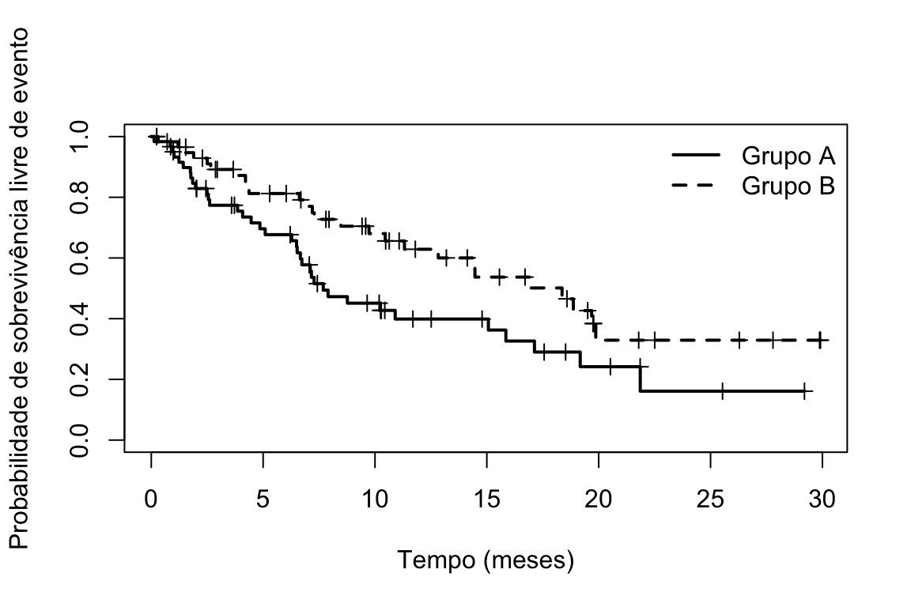
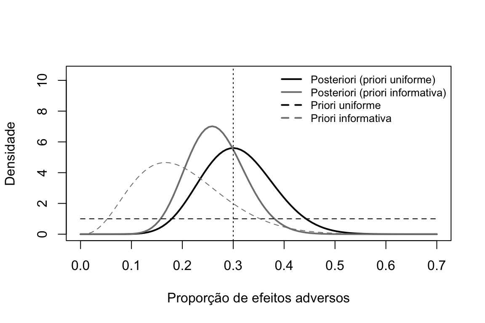
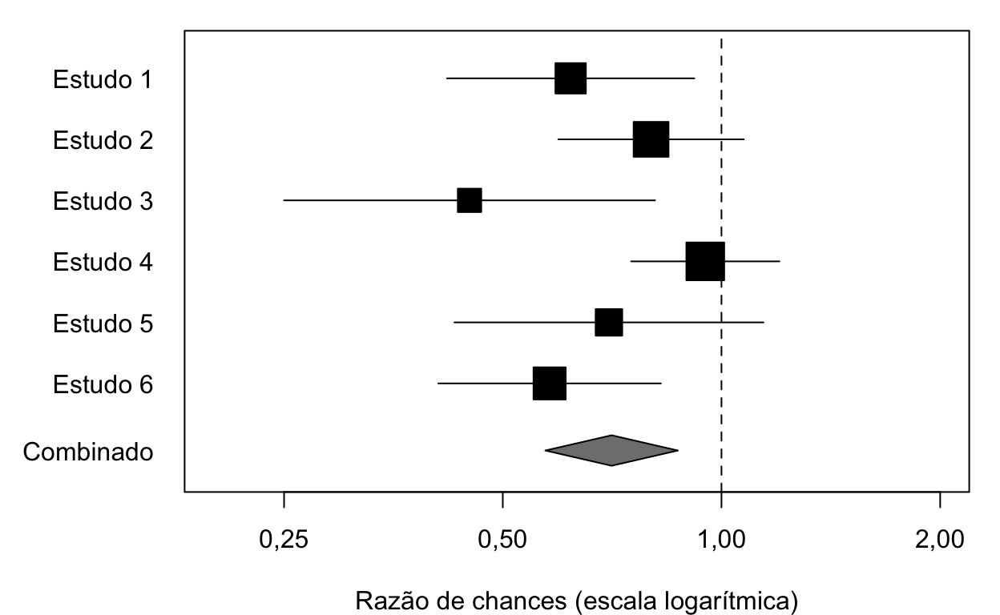

Capítulo 12 Tópicos avançados em bioestatística
Hércules Rezende Freitas, Ph.D.\(^1\)
\(^1\)Universidade do Estado do Rio de Janeiro (UERJ), Faculdade de Ciências Médicas, Departamento de Ciências Médicas Integradas, Laboratório de Informática em Saúde (LabInfoS), Cabo Frio/RJ, Brasil.
Os capítulos anteriores apresentaram os métodos que respondem à maior parte das perguntas de pesquisa com desfechos contínuos e observações independentes. Muitos problemas reais escapam a esse quadro: o desfecho é binário (óbito, complicação) ou uma contagem (número de quedas); as observações são agrupadas ou repetidas no mesmo indivíduo; o interesse está no tempo até um evento, que nem todos os participantes chegam a apresentar; há milhares de variáveis para poucas observações; ou é preciso combinar os resultados de vários estudos. Este capítulo introduz os métodos para essas situações e uma abordagem alternativa à inferência, a bayesiana. Cada seção é uma introdução: o objetivo é que o leitor entenda a lógica, saiba quando o método é necessário, interprete corretamente os resultados e reconheça os erros mais comuns. Os pacotes usados (MASS, nlme, survival) acompanham a instalação padrão do R.
12.1 Modelos lineares generalizados
12.1.1 Por que generalizar o modelo linear
A regressão linear do capítulo Análise de dados supõe que o desfecho tenha distribuição normal com variância constante, e que sua média seja uma função linear das variáveis explicativas. Para um desfecho binário, essas suposições falham: a média é uma probabilidade, limitada entre 0 e 1, e uma reta pode prever valores fora desse intervalo; a variância depende da média (\(\pi(1 - \pi)\)). Para contagens, a média deve ser positiva e a variância tende a crescer com a média.
Os modelos lineares generalizados (MLG, ou GLM) (Nelder and Wedderburn 1972) resolvem esses problemas com três componentes:
- um componente aleatório: a distribuição do desfecho, escolhida entre a família exponencial (normal, binomial, Poisson, gama, entre outras);
- um preditor linear: \(\eta = \beta_0 + \beta_1 X_1 + \cdots + \beta_p X_p\), como na regressão linear;
- uma função de ligação \(g\), que conecta a média do desfecho ao preditor linear: \(g(\mu) = \eta\).
A regressão linear é o caso particular com distribuição normal e ligação identidade (\(g(\mu) = \mu\)). Os parâmetros são estimados por máxima verossimilhança, e não por mínimos quadrados, e os testes e intervalos se baseiam em aproximações para amostras grandes.
12.1.2 Regressão logística
Para desfechos binários, usa-se a distribuição binomial com a ligação logit, o logaritmo da chance:
\[ \ln\left(\frac{\pi}{1 - \pi}\right) = \beta_0 + \beta_1 X_1 + \cdots + \beta_p X_p . \]
A consequência mais importante para a interpretação é que \(e^{\beta_j}\) é a razão de chances (OR) associada a um aumento de uma unidade em \(X_j\), mantidas constantes as demais variáveis.
Simulamos 600 pacientes cirúrgicos em que a probabilidade de complicação pós-operatória depende da idade, do tabagismo e do diabetes:
set.seed(2027)
n_cir <- 600
cirurgia <- data.frame(idade = round(runif(n_cir, 30, 85)),
fumante = rbinom(n_cir, 1, 0.25),
diabetes = rbinom(n_cir, 1, 0.20))
lp <- -6 + 0.06 * cirurgia$idade + 0.8 * cirurgia$fumante + 0.6 * cirurgia$diabetes
cirurgia$complicacao <- rbinom(n_cir, 1, plogis(lp))
table(cirurgia$complicacao)##
## 0 1
## 524 76modelo_log <- glm(complicacao ~ idade + fumante + diabetes, family = binomial, data = cirurgia)
round(exp(cbind(OR = coef(modelo_log), confint.default(modelo_log))), 3)## OR 2.5 % 97.5 %
## (Intercept) 0.004 0.001 0.013
## idade 1.054 1.035 1.074
## fumante 2.510 1.492 4.225
## diabetes 1.918 1.076 3.422Interpretação: ajustando para idade e diabetes, a chance de complicação dos fumantes é 2,51 vezes a dos não fumantes (IC 95%: 1,49 a 4,23). Para a idade, a OR de 1,054 refere-se a um ano a mais; para uma diferença de dez anos, a OR é \(e^{10\beta} =\) 1,69. A primeira linha da tabela (o intercepto) não tem interpretação útil como OR.
A razão de chances é difícil de comunicar e, quando o desfecho é frequente, afasta-se do risco relativo (capítulo Desenhos de pesquisa). Uma forma complementar de apresentar os resultados é por meio de probabilidades previstas: pelo modelo, um fumante sem diabetes tem probabilidade de complicação de 11,0% aos 50 anos e de 26,1% aos 70.
Tamanho amostral. Em regressão logística, a informação disponível depende do número de eventos, e não do número de participantes: 1.000 pacientes com 20 complicações fornecem pouca informação. A regra prática clássica de pelo menos 10 eventos por variável incluída no modelo (Peduzzi et al. 1996) é uma aproximação; para modelos de predição, recomendam-se cálculos formais de tamanho amostral (Riley et al. 2020). Com poucos eventos, as estimativas ficam enviesadas, e os intervalos, imprecisos.
12.1.3 Regressão de Poisson e binomial negativa
Para contagens (número de quedas, de crises, de internações), usa-se a distribuição de Poisson com ligação logarítmica: \(\ln(\mu) = \beta_0 + \beta_1 X_1 + \cdots\). Então \(e^{\beta_j}\) é a razão de taxas. Quando os participantes são acompanhados por tempos diferentes, o modelo inclui o logaritmo do tempo de acompanhamento como termo de compensação (offset), com coeficiente fixo em 1, de modo que o modelo descreve a taxa (eventos por unidade de tempo), e não a contagem bruta.
Simulamos um estudo com 200 idosos acompanhados por 6 a 12 meses, metade dos quais recebeu um programa de prevenção de quedas:
set.seed(5)
n_q <- 200
quedas <- data.frame(grupo = rep(c("controle", "intervencao"), each = n_q / 2),
meses = round(runif(n_q, 6, 12)))
taxa <- ifelse(quedas$grupo == "intervencao", 0.07, 0.10)
quedas$n_quedas <- rnbinom(n_q, mu = taxa * quedas$meses, size = 1.5)
modelo_pois <- glm(n_quedas ~ grupo + offset(log(meses)), family = poisson, data = quedas)
dispersao <- sum(residuals(modelo_pois, type = "pearson")^2) / df.residual(modelo_pois)
dispersao## [1] 1.668488modelo_nb <- glm.nb(n_quedas ~ grupo + offset(log(meses)), data = quedas)
rbind(Poisson = exp(c(coef(modelo_pois)[2], confint.default(modelo_pois)[2, ])),
Binomial_negativa = exp(c(coef(modelo_nb)[2], confint.default(modelo_nb)[2, ])))## grupointervencao 2.5 % 97.5 %
## Poisson 0.7084208 0.5118637 0.9804565
## Binomial_negativa 0.7332746 0.4811530 1.1175064A distribuição de Poisson supõe que a variância seja igual à média. A razão entre a soma dos quadrados dos resíduos de Pearson e os graus de liberdade estima esse parâmetro de dispersão; aqui, ela vale 1,67, indicando superdispersão (capítulo Aplicações práticas e estudos de caso). Com superdispersão, o modelo de Poisson subestima os erros padrão: o valor p para o efeito da intervenção é 0,038 no modelo de Poisson e 0,149 no modelo binomial negativo, que inclui um parâmetro adicional para a variância extra. A estimativa pontual da razão de taxas é semelhante nos dois modelos; o que muda é a precisão. Alternativas são o modelo quase-Poisson e os erros padrão robustos. Quando há excesso de zeros (muitos participantes sem nenhum evento, por razões estruturais), existem modelos específicos de inflação de zeros.
12.2 Modelos mistos
12.2.1 Observações agrupadas e medidas repetidas
Todos os métodos vistos até aqui supõem observações independentes. Essa suposição é violada sempre que os dados têm uma estrutura hierárquica: medidas repetidas no mesmo paciente ao longo do tempo, pacientes agrupados em hospitais, alunos em escolas, neurônios em animais (a pseudorreplicação do capítulo Desenhos de pesquisa). Observações de uma mesma unidade tendem a ser mais parecidas entre si do que observações de unidades diferentes. Ignorar essa correlação produz erros padrão incorretos: em geral, subestimados para efeitos que variam entre os grupos e superestimados para efeitos que variam dentro dos indivíduos.
Os modelos mistos (ou modelos de efeitos aleatórios, ou modelos multinível) (Pinheiro and Bates 2000) incluem, além dos efeitos fixos de interesse (tratamento, tempo), efeitos aleatórios que representam a variação entre as unidades. O modelo mais simples tem um intercepto aleatório: cada indivíduo \(i\) tem seu próprio nível basal, que se desvia da média por uma quantidade \(b_i\), suposta normal com média zero e variância \(\tau^2\):
\[ Y_{ij} = \beta_0 + b_i + \beta_1 \,\text{tempo}_{ij} + \cdots + \varepsilon_{ij}, \qquad b_i \sim N(0, \tau^2), \quad \varepsilon_{ij} \sim N(0, \sigma^2). \]
A proporção da variância total que se deve às diferenças entre indivíduos é o coeficiente de correlação intraclasse, \(\text{CCI} = \tau^2/(\tau^2 + \sigma^2)\), que é também a correlação entre duas medidas do mesmo indivíduo.
12.2.2 Exemplo
Trinta pacientes hipertensos (15 controles e 15 tratados) tiveram a pressão sistólica medida em quatro visitas. Comparamos uma regressão linear comum, que ignora que as medidas são do mesmo paciente, com um modelo misto com intercepto aleatório por paciente:
set.seed(8)
n_pac <- 30
longit <- expand.grid(visita = 0:3, id = 1:n_pac)
longit$grupo <- ifelse(longit$id <= 15, "controle", "tratado")
b_i <- rnorm(n_pac, 0, 8)
longit$pas <- 140 + b_i[longit$id] - 1 * longit$visita -
3 * longit$visita * (longit$grupo == "tratado") + rnorm(nrow(longit), 0, 4)
modelo_ingenuo <- lm(pas ~ visita * grupo, data = longit)
modelo_misto <- lme(pas ~ visita * grupo, random = ~ 1 | id, data = longit)
round(summary(modelo_ingenuo)$coefficients, 3)## Estimate Std. Error t value Pr(>|t|)
## (Intercept) 138.082 2.133 64.733 0.000
## visita -2.061 1.140 -1.808 0.073
## grupotratado 3.197 3.017 1.060 0.291
## visita:grupotratado -2.047 1.612 -1.269 0.207## Value Std.Error DF t-value p-value
## (Intercept) 138.082 2.505 88 55.125 0.000
## visita -2.061 0.522 88 -3.947 0.000
## grupotratado 3.197 3.542 28 0.902 0.375
## visita:grupotratado -2.047 0.739 88 -2.771 0.007As estimativas dos efeitos fixos são idênticas nos dois modelos, mas os erros padrão não. O termo de interação visita:grupotratado, que mede quanto a pressão cai a mais por visita no grupo tratado, tem erro padrão de 1,61 no modelo ingênuo e de 0,74 no modelo misto, com valores p de 0,207 e 0,007, respectivamente. O modelo misto separa a grande variação entre pacientes (que não afeta a comparação das inclinações, porque cada paciente serve como seu próprio controle ao longo do tempo) da variação dentro de cada paciente. O CCI estimado é de 0,80: 80% da variância total se deve a diferenças estáveis entre pacientes.
Extensões incluem inclinações aleatórias (cada paciente com sua própria taxa de variação), estruturas de correlação para medidas próximas no tempo, vários níveis de agrupamento (medidas em pacientes em hospitais) e modelos mistos generalizados para desfechos binários e contagens. Para ensaios por conglomerados e estudos multicêntricos, o modelo misto é a análise padrão. Os pacotes nlme e lme4 são os mais usados no R.
12.3 Análise de sobrevivência
12.3.1 Tempo até o evento e censura
Em muitos estudos, o desfecho é o tempo até um evento: óbito, recidiva, alta, falha de um implante. A dificuldade característica é a censura: para alguns participantes, o evento não é observado até o fim do acompanhamento, porque o estudo terminou, porque o participante foi perdido ou porque saiu do estudo por outro motivo. Sabe-se apenas que o tempo até o evento é maior que o tempo observado.
Excluir os participantes censurados ou tratá-los como se tivessem tido o evento no último contato enviesa os resultados. Analisar apenas a proporção de eventos ignora o tempo e trata da mesma forma um óbito no primeiro mês e no quinto ano. Os métodos de análise de sobrevivência usam a informação dos censurados enquanto estiveram em observação. Eles supõem censura não informativa: a razão da censura não está relacionada ao prognóstico. Se os pacientes que pioram tendem a abandonar o acompanhamento, essa suposição é violada.
12.3.2 O estimador de Kaplan–Meier
A função de sobrevivência \(S(t)\) é a probabilidade de o evento ainda não ter ocorrido até o tempo \(t\). O estimador de Kaplan–Meier (Kaplan and Meier 1958) a calcula como um produto de probabilidades condicionais: em cada tempo \(t_j\) em que ocorre ao menos um evento, a probabilidade de “sobreviver” a esse tempo, para quem chegou até ele, é \(1 - d_j/n_j\), em que \(d_j\) é o número de eventos e \(n_j\) o número de participantes em risco (ainda em observação e sem o evento) imediatamente antes de \(t_j\). Então
\[ \hat{S}(t) = \prod_{t_j \le t}\left(1 - \frac{d_j}{n_j}\right). \]
Exemplo resolvido. Oito pacientes foram acompanhados após uma cirurgia; os tempos até a recidiva, em meses, foram 3, 5+, 6, 8, 8, 10+, 12 e 15+, em que o sinal “+” indica censura. A Tabela 12.1 mostra o cálculo.
| Tempo \(t_j\) | Em risco \(n_j\) | Eventos \(d_j\) | \(1 - d_j/n_j\) | \(\hat{S}(t_j)\) |
|---|---|---|---|---|
| 3 | 8 | 1 | 7/8 = 0,875 | 0,875 |
| 6 | 6 | 1 | 5/6 = 0,833 | 0,875 × 0,833 = 0,729 |
| 8 | 5 | 2 | 3/5 = 0,600 | 0,729 × 0,600 = 0,438 |
| 12 | 2 | 1 | 1/2 = 0,500 | 0,438 × 0,500 = 0,219 |
Note como a censura atua: o paciente censurado aos 5 meses contribui para o conjunto em risco aos 3 meses, mas não aos 6; por isso, aos 6 meses há 6, e não 7, pacientes em risco. A estimativa é de que 43,8% dos pacientes estejam livres de recidiva aos 8 meses.
tempo_km <- c(3, 5, 6, 8, 8, 10, 12, 15)
evento_km <- c(1, 0, 1, 1, 1, 0, 1, 0)
summary(survfit(Surv(tempo_km, evento_km) ~ 1))## Call: survfit(formula = Surv(tempo_km, evento_km) ~ 1)
##
## time n.risk n.event survival std.err lower 95% CI upper 95% CI
## 3 8 1 0.875 0.117 0.6734 1
## 6 6 1 0.729 0.165 0.4680 1
## 8 5 2 0.438 0.188 0.1885 1
## 12 2 1 0.219 0.181 0.0432 112.3.3 Comparação de grupos: log-rank e modelo de Cox
Para comparar curvas de sobrevivência entre grupos, o teste log-rank compara, em cada tempo de evento, o número observado de eventos em cada grupo com o número esperado se as curvas fossem iguais, e acumula essas diferenças ao longo do tempo.
O modelo de riscos proporcionais de Cox (Cox 1972) permite incluir várias variáveis explicativas. Ele modela a função de risco (hazard), a taxa instantânea de ocorrência do evento entre os que ainda não o apresentaram:
\[ h(t \mid X) = h_0(t)\exp(\beta_1 X_1 + \cdots + \beta_p X_p), \]
em que \(h_0(t)\) é um risco basal que não precisa ser especificado. A quantidade \(e^{\beta_j}\) é a razão de riscos (hazard ratio, HR). O modelo supõe que as razões de riscos sejam constantes ao longo do tempo (riscos proporcionais), suposição que deve ser verificada, por exemplo com os resíduos de Schoenfeld (cox.zph()).
set.seed(3)
n_s <- 120
grupo_s <- rep(c("A", "B"), each = n_s / 2)
t_evento <- rexp(n_s, rate = ifelse(grupo_s == "B", 0.05, 0.08))
t_censura <- runif(n_s, 0, 30)
sobrev <- data.frame(grupo = grupo_s, tempo = pmin(t_evento, t_censura),
evento = as.integer(t_evento <= t_censura))
survdiff(Surv(tempo, evento) ~ grupo, data = sobrev)## Call:
## survdiff(formula = Surv(tempo, evento) ~ grupo, data = sobrev)
##
## N Observed Expected (O-E)^2/E (O-E)^2/V
## grupo=A 60 36 27.2 2.84 5.11
## grupo=B 60 26 34.8 2.22 5.11
##
## Chisq= 5.1 on 1 degrees of freedom, p= 0.02## exp(coef) exp(-coef) lower .95 upper .95
## grupoB 0.5616237 1.780552 0.3382368 0.9325456## chisq df p
## grupo 0.735 1 0.39
## GLOBAL 0.735 1 0.39plot(survfit(Surv(tempo, evento) ~ grupo, data = sobrev), lty = c(1, 2), lwd = 2, mark.time = TRUE,
xlab = "Tempo (meses)", ylab = "Probabilidade de sobrevivência livre de evento")
legend("topright", legend = c("Grupo A", "Grupo B"), lty = c(1, 2), lwd = 2, bty = "n")
Figura 12.1: Curvas de Kaplan–Meier para dois grupos (dados simulados). As marcas verticais indicam censuras.
O grupo B tem uma razão de riscos de 0,56 (IC 95%: 0,34 a 0,93) em relação ao grupo A: em qualquer momento, o risco instantâneo do evento é cerca de 44% menor no grupo B. A verificação dos riscos proporcionais não indica violação. Uma razão de riscos não é um risco relativo cumulativo, e é útil complementá-la com medidas absolutas, como a sobrevivência estimada em um tempo de interesse ou a sobrevivência mediana (o tempo em que \(\hat{S}(t) = 0{,}5\)).
Dois erros frequentes merecem atenção. O primeiro é o viés do tempo imortal (capítulo Desenhos de pesquisa), que surge quando se classificam os pacientes por um evento que ocorre durante o acompanhamento. O segundo é ignorar riscos competitivos: quando um evento (por exemplo, óbito por outra causa) impede a ocorrência do evento de interesse, o complemento do Kaplan–Meier superestima a incidência cumulativa, e métodos específicos são necessários.
12.4 Inferência bayesiana
12.4.1 A lógica bayesiana
Os métodos dos capítulos anteriores pertencem à abordagem frequentista, em que os parâmetros são constantes desconhecidas e as probabilidades se referem a resultados de amostras hipotéticas repetidas. Na abordagem bayesiana, a incerteza sobre os próprios parâmetros é descrita por distribuições de probabilidade (Gelman et al. 2013). O teorema de Bayes (capítulo Bioestatística inferencial), aplicado a um parâmetro \(\theta\) e aos dados \(y\), fica
\[ \underbrace{p(\theta \mid y)}_{\text{posteriori}} \;\propto\; \underbrace{p(y \mid \theta)}_{\text{verossimilhança}} \times \underbrace{p(\theta)}_{\text{priori}} . \]
- A distribuição a priori descreve o conhecimento sobre \(\theta\) antes dos dados (por exemplo, a partir de estudos anteriores), ou uma posição deliberadamente pouco informativa.
- A verossimilhança descreve quão compatíveis os dados são com cada valor de \(\theta\); é a mesma quantidade usada nos métodos de máxima verossimilhança.
- A distribuição a posteriori combina as duas e descreve o conhecimento atualizado. Dela se extraem estimativas (média ou mediana a posteriori) e intervalos de credibilidade.
12.4.2 Um exemplo com proporção
Em um estudo-piloto, 12 de 40 pacientes apresentaram um efeito adverso. Queremos estimar a proporção \(\theta\) de pacientes com o efeito. Se a priori for uma distribuição beta, \(\text{Beta}(\alpha, \beta)\), e os dados forem \(x\) eventos em \(n\) pacientes, a posteriori também será beta: \(\text{Beta}(\alpha + x, \beta + n - x)\). Essa conveniência matemática (a priori e a posteriori na mesma família) é chamada de conjugação.
- Com uma priori uniforme, \(\text{Beta}(1, 1)\), que atribui a mesma densidade a todos os valores entre 0 e 1, a posteriori é \(\text{Beta}(13, 29)\).
- Com uma priori informativa baseada em estudos anteriores, que sugeriam uma proporção em torno de 20%, por exemplo \(\text{Beta}(4, 16)\) (média de 0,20, equivalente à informação de cerca de 20 pacientes), a posteriori é \(\text{Beta}(16, 44)\).
posteriores <- list(uniforme = c(13, 29), informativa = c(16, 44))
t(sapply(posteriores, function(p) c(
media = p[1] / sum(p),
IC_cred_inf = qbeta(0.025, p[1], p[2]),
IC_cred_sup = qbeta(0.975, p[1], p[2]),
P_maior_25 = 1 - pbeta(0.25, p[1], p[2]))))## media IC_cred_inf IC_cred_sup P_maior_25
## uniforme 0.3095238 0.1808494 0.4553740 0.7944354
## informativa 0.2666667 0.1636327 0.3844241 0.5983543curve(dbeta(x, 13, 29), 0, 0.7, lwd = 2, ylim = c(0, 10.5), ylab = "Densidade", xlab = "Proporção de efeitos adversos")
curve(dbeta(x, 16, 44), add = TRUE, lwd = 2, col = "grey50")
curve(dbeta(x, 1, 1), add = TRUE, lty = 2)
curve(dbeta(x, 4, 16), add = TRUE, lty = 2, col = "grey50")
abline(v = 12 / 40, lty = 3)
legend("topright", bty = "n", lwd = 2, lty = c(1, 1, 2, 2), col = c("black", "grey50", "black", "grey50"),
legend = c("Posteriori (priori uniforme)", "Posteriori (priori informativa)",
"Priori uniforme", "Priori informativa"), cex = 0.8)
Figura 12.2: Distribuições a priori (tracejadas) e a posteriori (contínuas) para a proporção de efeitos adversos, com priori uniforme (preto) e informativa (cinza). A linha vertical indica a proporção observada (12/40).
Com a priori uniforme, a média a posteriori é de 0,31, com intervalo de credibilidade de 95% de 0,18 a 0,46, valores próximos do intervalo de Wilson frequentista (0,18 a 0,45). Com a priori informativa, a estimativa é puxada em direção a 0,20 (média de 0,27) e o intervalo fica mais estreito, porque a priori acrescenta informação. A interpretação do intervalo de credibilidade é a que muitos atribuem, erroneamente, ao intervalo de confiança: dada a priori e os dados, há 95% de probabilidade de \(\theta\) estar entre os limites. Também é possível calcular diretamente probabilidades de interesse, como a probabilidade de a proporção ser maior que 25% (0,79 com a priori uniforme), algo que um valor p não fornece.
12.4.3 Vantagens e cuidados
A abordagem bayesiana permite incorporar formalmente o conhecimento prévio, responde diretamente a perguntas como “qual a probabilidade de o tratamento ser benéfico?”, lida naturalmente com modelos complexos e com a atualização sequencial dos dados, e não depende de regras de parada fixas. Seus cuidados são: a priori deve ser justificada e especificada antes de ver os dados, e os resultados devem ser acompanhados de análises de sensibilidade com prioris diferentes, sobretudo quando os dados são escassos e a priori tem grande influência. Para modelos sem solução conjugada, as posterioris são obtidas por métodos de simulação (cadeias de Markov Monte Carlo), implementados em programas como Stan, acessível pelo R por pacotes como brms e rstanarm.
12.5 Bioinformática e big data
12.5.1 Dados de alta dimensão
As tecnologias “ômicas” (genômica, transcriptômica, proteômica, metabolômica) e os registros eletrônicos de saúde produzem conjuntos de dados com características que desafiam os métodos clássicos. O caso típico de alta dimensão tem muito mais variáveis do que observações (\(p \gg n\)): por exemplo, a expressão de 20.000 genes em 100 amostras. Nessa situação, um modelo de regressão com todas as variáveis não pode sequer ser ajustado, e a seleção de variáveis se torna uma fonte importante de erro.
12.5.2 Sobreajuste e o viés de seleção
A simulação a seguir mostra o problema central. Geramos 100 observações de um desfecho e 1.000 variáveis preditoras, todas independentes do desfecho (puro ruído). Usando as primeiras 50 observações, selecionamos as 10 variáveis mais correlacionadas com o desfecho e ajustamos uma regressão:
set.seed(99)
n_obs <- 100; n_var <- 1000
X <- matrix(rnorm(n_obs * n_var), n_obs)
y <- rnorm(n_obs)
treino <- 1:50; teste <- 51:100
correlacoes <- abs(cor(X[treino, ], y[treino]))
selecionadas <- order(correlacoes, decreasing = TRUE)[1:10]
ajuste <- lm(y[treino] ~ X[treino, selecionadas])
r2_treino <- summary(ajuste)$r.squared
previsto <- cbind(1, X[teste, selecionadas]) %*% coef(ajuste)
r2_teste <- cor(previsto, y[teste])^2
c(R2_treino = r2_treino, R2_teste = r2_teste)## R2_treino R2_teste
## 0.6520786 0.0129579Nos dados usados para selecionar as variáveis e ajustar o modelo, o \(R^2\) é de 0,65: o modelo parece explicar 65% da variação do desfecho. Em dados novos, o \(R^2\) cai para 0,01, porque não há relação alguma a ser encontrada. O modelo se ajustou ao ruído da amostra (sobreajuste), e a seleção das variáveis com os mesmos dados usados para avaliar o modelo produziu um otimismo enorme. Esse viés de seleção foi documentado em estudos de assinaturas gênicas que relatavam taxas de erro de classificação próximas de zero, impossíveis de reproduzir (Ambroise and McLachlan 2002).
As defesas são:
- validação em dados que não foram usados em nenhuma etapa da construção do modelo, inclusive a seleção de variáveis. A validação cruzada divide os dados em \(k\) partes, constrói o modelo em \(k - 1\) partes e o avalia na parte restante, repetindo o procedimento para cada parte; todas as etapas (seleção, ajuste, escolha de parâmetros) devem ser repetidas dentro de cada divisão;
- regularização: métodos como o LASSO (Tibshirani 1996) e a regressão ridge penalizam a magnitude dos coeficientes, encolhendo-os em direção a zero e, no caso do LASSO, selecionando variáveis de forma mais estável. O pacote
glmnetos implementa; - validação externa em uma população independente, idealmente de outro centro ou período, antes de qualquer uso clínico de um modelo preditivo.
12.5.3 Efeitos de lote e outros problemas
Em experimentos de alta dimensão, as amostras são frequentemente processadas em lotes (dias, placas, corridas de sequenciamento). Diferenças técnicas entre lotes podem produzir variações maiores que os efeitos biológicos e, se os lotes coincidirem com os grupos de comparação (todos os casos em um lote, todos os controles em outro), o efeito do lote fica completamente confundido com o efeito biológico, sem possibilidade de correção (Leek et al. 2010). A solução é de desenho, e não de análise: distribuir os grupos de forma balanceada e aleatória entre os lotes (capítulo Desenhos de pesquisa).
12.5.4 Grandes bases de dados
Em grandes bases administrativas e registros eletrônicos, o problema é o oposto: há milhões de observações, e o erro aleatório se torna desprezível. Isso pode criar uma falsa sensação de certeza. Intervalos de confiança estreitíssimos em torno de uma estimativa enviesada não a tornam correta. Meng (2018) mostrou que, quando a probabilidade de um indivíduo estar na base depende, ainda que fracamente, da variável estudada, uma amostra enorme e não aleatória pode conter menos informação útil que uma pequena amostra aleatória. Em bases de saúde, a seleção (quem procura o serviço, quem é registrado), a qualidade dos registros e a confusão são as principais ameaças, e nenhuma diminui com o tamanho da base. Os princípios de desenho do capítulo Desenhos de pesquisa, como a emulação de um ensaio-alvo, são tão importantes nesses estudos quanto em estudos pequenos.
12.6 Metanálise
12.6.1 Combinando estudos
A metanálise é a combinação estatística dos resultados de vários estudos que respondem à mesma pergunta. É, em geral, a etapa final de uma revisão sistemática (capítulo Formulação de problemas e hipóteses), e só faz sentido quando os estudos são suficientemente semelhantes em população, intervenção, comparador e desfecho. Uma metanálise de estudos enviesados produz uma estimativa enviesada e precisa.
Cada estudo \(i\) fornece uma estimativa do efeito, \(y_i\) (por exemplo, o logaritmo de uma razão de chances, ou uma diferença de médias), e seu erro padrão, \(\text{EP}_i\). A estimativa combinada é uma média ponderada pelo inverso da variância: estudos mais precisos recebem mais peso.
12.6.2 Efeito fixo e efeitos aleatórios
No modelo de efeito fixo (ou comum), supõe-se que todos os estudos estimam o mesmo efeito verdadeiro \(\theta\), e que as diferenças entre eles se devem apenas ao erro amostral:
\[ w_i = \frac{1}{\text{EP}_i^2}, \qquad \hat{\theta}_F = \frac{\sum w_i y_i}{\sum w_i}, \qquad \text{EP}(\hat{\theta}_F) = \frac{1}{\sqrt{\sum w_i}} . \]
No modelo de efeitos aleatórios, supõe-se que os efeitos verdadeiros variam entre os estudos (por diferenças de população, dose, desenho), em torno de uma média \(\mu\), com variância entre estudos \(\tau^2\). Os pesos passam a ser \(w_i^* = 1/(\text{EP}_i^2 + \tau^2)\). O estimador de \(\tau^2\) mais conhecido é o de DerSimonian e Laird (DerSimonian and Laird 1986):
\[ \hat{\tau}^2 = \max\left(0,\; \frac{Q - (k - 1)}{\sum w_i - \sum w_i^2 / \sum w_i}\right), \]
em que \(k\) é o número de estudos e \(Q = \sum w_i (y_i - \hat{\theta}_F)^2\) é a estatística de heterogeneidade de Cochran, que segue aproximadamente uma qui-quadrado com \(k - 1\) graus de liberdade se não houver heterogeneidade.
A heterogeneidade é quantificada pelo \(I^2 = \max\left(0, \frac{Q - (k - 1)}{Q}\right)\), a proporção da variabilidade observada entre as estimativas que se deve a diferenças reais, e não ao acaso (Higgins and Thompson 2002). O teste \(Q\) tem pouco poder com poucos estudos, e o \(I^2\) é impreciso; ambos devem ser interpretados com cautela.
12.6.3 Exemplo
Seis estudos avaliaram o efeito de uma intervenção sobre a ocorrência de um desfecho, com as razões de chances e os erros padrão do log OR da Tabela 12.2.
| Estudo | OR | ln(OR) | EP | Peso (efeito fixo) | Peso (%) |
|---|---|---|---|---|---|
| 1 | 0,62 | -0,478 | 0,20 | 25,0 | 12,7 |
| 2 | 0,80 | -0,223 | 0,15 | 44,4 | 22,6 |
| 3 | 0,45 | -0,799 | 0,30 | 11,1 | 5,6 |
| 4 | 0,95 | -0,051 | 0,12 | 69,4 | 35,3 |
| 5 | 0,70 | -0,357 | 0,25 | 16,0 | 8,1 |
| 6 | 0,58 | -0,545 | 0,18 | 30,9 | 15,7 |
metanalise <- function(yi, ep) {
w <- 1 / ep^2; k <- length(yi)
fixo <- sum(w * yi) / sum(w); ep_fixo <- sqrt(1 / sum(w))
Q <- sum(w * (yi - fixo)^2)
tau2 <- max(0, (Q - (k - 1)) / (sum(w) - sum(w^2) / sum(w)))
I2 <- max(0, (Q - (k - 1)) / Q)
w_ale <- 1 / (ep^2 + tau2)
aleat <- sum(w_ale * yi) / sum(w_ale); ep_aleat <- sqrt(1 / sum(w_ale))
list(OR_fixo = exp(fixo + c(est = 0, inf = -1.96, sup = 1.96) * ep_fixo),
OR_aleatorio = exp(aleat + c(est = 0, inf = -1.96, sup = 1.96) * ep_aleat),
Q = Q, p_Q = pchisq(Q, k - 1, lower.tail = FALSE), I2 = I2, tau2 = tau2)
}
res_meta <- metanalise(yi, ep_i)
res_meta## $OR_fixo
## est inf sup
## 0.7492849 0.6515974 0.8616177
##
## $OR_aleatorio
## est inf sup
## 0.7059909 0.5722516 0.8709862
##
## $Q
## [1] 9.986127
##
## $p_Q
## [1] 0.07562929
##
## $I2
## [1] 0.4993054
##
## $tau2
## [1] 0.03271899k <- length(yi)
w_ale <- 1 / (ep_i^2 + res_meta$tau2)
op <- par(mar = c(4, 6, 1, 1))
plot(NA, xlim = log(c(0.2, 2)), ylim = c(0.5, k + 1.5), yaxt = "n", xaxt = "n",
xlab = "Razão de chances (escala logarítmica)", ylab = "")
eixo <- c(0.25, 0.5, 1, 2)
axis(1, at = log(eixo), labels = num(eixo, 2))
axis(2, at = c(k:1 + 1, 0.9), labels = c(paste("Estudo", 1:k), "Combinado"), las = 1, tick = FALSE)
abline(v = 0, lty = 2)
segments(yi - 1.96 * ep_i, k:1 + 1, yi + 1.96 * ep_i, k:1 + 1)
symbols(yi, k:1 + 1, squares = sqrt(w_ale / max(w_ale)) * 0.12, inches = FALSE, add = TRUE, bg = "black")
ic_c <- log(res_meta$OR_aleatorio)
polygon(c(ic_c[2], ic_c[1], ic_c[3], ic_c[1]), c(0.9, 1.15, 0.9, 0.65), col = "grey50", border = "black")
Figura 12.3: Gráfico de floresta (forest plot) da metanálise. Os quadrados representam as estimativas de cada estudo, com área proporcional ao peso no modelo de efeitos aleatórios, e as linhas, seus intervalos de confiança de 95%. O losango representa a estimativa combinada. O eixo horizontal está em escala logarítmica.
A estimativa combinada pelo modelo de efeitos aleatórios é uma OR de 0,71 (IC 95%: 0,57 a 0,87); pelo modelo de efeito fixo, 0,75 (0,65 a 0,86). A heterogeneidade é moderada (\(Q =\) 9,99, com 5 graus de liberdade, \(p =\) 0,076; \(I^2 =\) 50%). No modelo de efeitos aleatórios, os pesos ficam mais equilibrados entre os estudos e o intervalo se alarga, refletindo a incerteza adicional da variação entre estudos.
Algumas observações práticas:
- a escolha entre efeito fixo e efeitos aleatórios deve ser feita antes da análise, com base no que se supõe sobre os estudos, e não pelo resultado do teste de heterogeneidade. Em ciências da saúde, em que os estudos raramente são idênticos, o modelo de efeitos aleatórios é o mais usado;
- com poucos estudos, o método de DerSimonian–Laird subestima a incerteza; o ajuste de Hartung–Knapp–Sidik–Jonkman produz intervalos com cobertura mais adequada (IntHout et al. 2014);
- a heterogeneidade deve ser explorada, quando possível, por análises de subgrupo e metarregressão definidas previamente, e não apenas relatada;
- o viés de publicação (estudos com resultados nulos têm menor chance de serem publicados) pode distorcer a estimativa combinada. O gráfico de funil (estimativa versus precisão) e testes de assimetria, como o de Egger (Egger et al. 1997), ajudam a detectá-lo, mas têm baixo poder com poucos estudos, e assimetria pode ter outras causas;
- os pacotes
metaemetaforimplementam todos esses métodos e produzem gráficos de floresta e de funil para publicação.
12.7 Resumo do capítulo
- Modelos lineares generalizados combinam uma distribuição, um preditor linear e uma função de ligação. Na regressão logística, \(e^{\beta}\) é uma razão de chances; na de Poisson, uma razão de taxas. Inclua o tempo de acompanhamento como offset e verifique a superdispersão.
- Em regressão logística, a informação depende do número de eventos.
- Observações agrupadas ou repetidas não são independentes; modelos mistos separam a variação entre e dentro das unidades. O CCI quantifica a correlação intraunidade.
- Na análise de sobrevivência, a censura é tratada pelo estimador de Kaplan–Meier, pelo teste log-rank e pelo modelo de Cox. Verifique a proporcionalidade dos riscos e cuide do tempo imortal e dos riscos competitivos.
- A inferência bayesiana combina priori e verossimilhança em uma posteriori; intervalos de credibilidade têm interpretação probabilística direta. Justifique a priori e faça análises de sensibilidade.
- Com muitas variáveis e poucas observações, a seleção e a avaliação de um modelo com os mesmos dados produzem otimismo enorme. Use validação cruzada (incluindo a seleção dentro dela), regularização e validação externa.
- Efeitos de lote confundidos com grupos não podem ser corrigidos na análise. Grandes bases reduzem o erro aleatório, mas não os vieses.
- A metanálise combina estudos por ponderação pelo inverso da variância. Prefira, em geral, o modelo de efeitos aleatórios; avalie a heterogeneidade (\(Q\), \(I^2\), \(\tau^2\)) e o viés de publicação com cautela.
12.8 Exercícios
Em uma regressão logística para óbito hospitalar, o coeficiente da idade (em anos) foi 0,045. Calcule e interprete a OR para 1 ano e para 10 anos.
Um estudo comparou o número de crises epilépticas em pacientes tratados com dois medicamentos, acompanhados por tempos diferentes. Que modelo você usaria? Como lidaria com o tempo de acompanhamento? Como verificaria se o modelo é adequado?
Em um estudo, 20 pacientes tiveram a glicemia medida em 6 visitas. Os autores analisaram as 120 medidas com uma regressão linear comum. Qual o problema? Que método seria adequado?
Calcule o estimador de Kaplan–Meier para os tempos 2, 4+, 4, 7, 9+, 11, em meses (“+” indica censura).
Em um estudo, 3 de 10 pacientes responderam a um tratamento. Calcule a média e o intervalo de credibilidade de 95% a posteriori com priori \(\text{Beta}(1, 1)\). Use
qbeta().Um pesquisador mediu a expressão de 15.000 genes em 40 tumores, selecionou os 20 genes mais associados à resposta ao tratamento e construiu um classificador, que acertou 100% dos casos nos mesmos 40 tumores. O que você conclui?
Em uma metanálise de 8 estudos, \(Q = 7{,}2\). Calcule o \(I^2\). A ausência de heterogeneidade estatística significa que os estudos são homogêneos?
12.9 Respostas dos exercícios
\(\text{OR}_{1\text{ ano}} = e^{0{,}045} \approx 1{,}046\): cada ano a mais está associado a uma chance de óbito 4,6% maior, ajustando para as demais variáveis. \(\text{OR}_{10\text{ anos}} = e^{0{,}45} \approx 1{,}57\): uma diferença de dez anos está associada a uma chance 57% maior. Note que não se multiplica a OR de um ano por 10; eleva-se à décima potência (ou multiplica-se o coeficiente por 10 antes de exponenciar).
Regressão de Poisson com o logaritmo do tempo de acompanhamento como offset, para modelar a taxa de crises; \(e^{\beta}\) do medicamento é a razão de taxas. Verificaria a superdispersão (razão entre a soma dos quadrados dos resíduos de Pearson e os graus de liberdade); contagens de crises costumam ser muito superdispersas, caso em que usaria a binomial negativa. Também verificaria excesso de zeros.
As 6 medidas de um mesmo paciente não são independentes; tratá-las como 120 observações independentes produz erros padrão incorretos. Um modelo misto, com efeito aleatório para o paciente (e, possivelmente, inclinação aleatória no tempo), é adequado.
Tempos ordenados: 2, 4, 4+, 7, 9+, 11. Por convenção, quando um evento e uma censura ocorrem no mesmo tempo, considera-se que a censura ocorre logo depois. Aos 2 meses: 6 em risco, 1 evento, \(\hat{S} = 5/6 = 0{,}833\). Aos 4: 5 em risco, 1 evento, \(\hat{S} = 0{,}833 \times 4/5 = 0{,}667\). Aos 7: 3 em risco (saíram o evento e a censura aos 4), 1 evento, \(\hat{S} = 0{,}667 \times 2/3 = 0{,}444\). Aos 11: 1 em risco (o censurado aos 9 saiu), 1 evento, \(\hat{S} = 0\).
Posteriori \(\text{Beta}(1 + 3, 1 + 7) = \text{Beta}(4, 8)\); média \(4/12 = 0{,}33\); intervalo de credibilidade de 95%:
qbeta(c(0.025, 0.975), 4, 8), aproximadamente 0,11 a 0,61. O intervalo largo reflete a pequena quantidade de dados.O desempenho de 100% é quase certamente fruto de sobreajuste e de viés de seleção: com 15.000 genes e 40 tumores, sempre é possível encontrar genes que separam perfeitamente os grupos por acaso. A seleção dos genes e a avaliação foram feitas com os mesmos dados. O classificador precisa ser avaliado por validação cruzada que inclua a etapa de seleção, e validado em um conjunto independente de tumores.
\(I^2 = \max(0, (7{,}2 - 7)/7{,}2) \approx 0{,}03\), ou 3%. Não necessariamente: com 8 estudos, o teste \(Q\) tem pouco poder, e o \(I^2\) é muito impreciso. A ausência de heterogeneidade estatística não demonstra que os estudos sejam clinicamente homogêneos; isso deve ser avaliado pelas características dos estudos (populações, intervenções, desfechos).